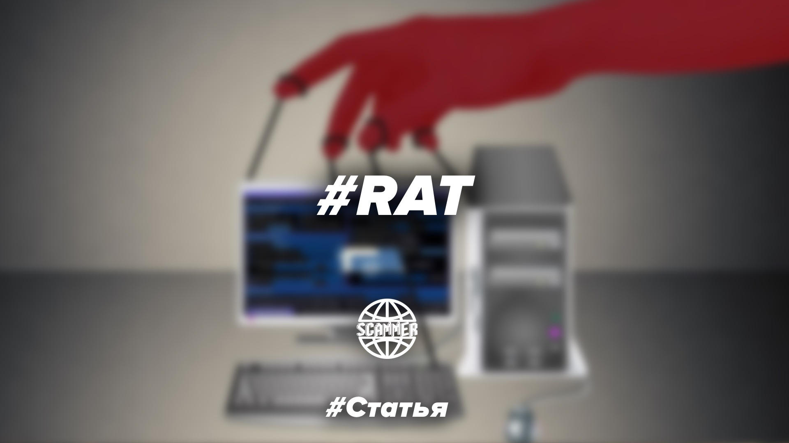

Что такое Rat? Самые известные вирусы удаленного доступа
Для начала расскажу что такое Rat, rat'ом называют вирус, дающий хакеру доступ к устройству жертвы.

Для тех кто забыл, RAT - это троян удаленного доступа(Remote administration tool). Простыми словами - это вредоносное ПО которое позволяет хакеру заполучить полный контроль над зараженным устройством. То есть злоумышленник может как рисовать половые органы в вашем пейнте, так и вымогать выкуп за украденные конфиденциальные данные. RAT - очень мощный инструмент, который открывает широчайший спектр действий. Думаю это, итак, понятно, так что перейдем к самым выдающимся представителям.
Теперь перейдем к самым известным вирусам этого типа
- Back Orifice
- Dark Comet
- Mirage
- Orcus
Back Orifice
Вся движуха началась еще в 1998, хотя многие заявляют, что RAT чуть более 10 лет. Как раз в то бородатое время появился дедушка всех современных крыс - Back Orifice. Его создали члены легендарной хакерской группировки «Культ дохлой коровы», о которой я возможно выпущу отдельный пост. Изначально троян выпустили под Windows 95 (затем были версии на 98 и XP) и он наделал кучу шума, так как позволял получить полный удаленный доступ к компьютеру жертвы, да еще и обладал приятным интерфейсом. Вообще сама програмка на первый взгляд безобидна. Казалось бы, обычный Team Viewer, если бы не одно но. После того как на компьютер попадал неприметный файл bo2k.exe, он постепенно проникал во все файлы системы и захватывал над ними контроль абсолютно незаметно для пользователя. Самое интересное, BO предоставляет пользователю больше возможностей на удаленном Windows-компьютере, чем имеет сам пользователь этого компьютера. Весьма иронично, так что не удивительно, что его быстро классифицировали как троян, да и создатели не сильно скромничали.
Dark Comet
Вся движуха началась еще в 1998, хотя многие заявляют, что RAT чуть более 10 лет. Как раз в то бородатое время появился дедушка всех современных крыс - Back Orifice. Его создали члены легендарной хакерской группировки «Культ дохлой коровы», о которой я возможно выпущу отдельный пост. Изначально троян выпустили под Windows 95 (затем были версии на 98 и XP) и он наделал кучу шума, так как позволял получить полный удаленный доступ к компьютеру жертвы, да еще и обладал приятным интерфейсом. Вообще сама програмка на первый взгляд безобидна. Казалось бы, обычный Team Viewer, если бы не одно но. После того как на компьютер попадал неприметный файл bo2k.exe, он постепенно проникал во все файлы системы и захватывал над ними контроль абсолютно незаметно для пользователя. Самое интересное, BO предоставляет пользователю больше возможностей на удаленном Windows-компьютере, чем имеет сам пользователь этого компьютера. Весьма иронично, так что не удивительно, что его быстро классифицировали как троян, да и создатели не сильно скромничали.
Mirage
Изобретение китайских хакеров спонсируемых коммунистической партией. Самый политизированный RAT, так как использовался в основном для слежки за иностранными правительствами, а также диверсий в крупных компаниях в период с 2009-2015 года. На компьютеры он попадал через email рассылку с вложенным PDF файлом с сюрпризом. До сих пор фиксируются обновленные версию данного трояна, так что китайцы не дремлют.
Orcus
В 2016 парочка хитрых предпринимателей из канады основала компанию Orcus Technologies, главным продуктом которой стал аналог тимвьювера ORcus. Вот только софт оказался не таким уж и безобидным, ведь его можно поставить без ведома владельца компьютера. Власти просекли тему и выписали создателям нехилый штраф да еще и уголовку в придачу. Тем не менее Orcus до сих поря являются одним из самых популярных RAT, предоставляет отличный функционал и удобный интерфейс. Через него можно делать абсолютно все, только на чужом компьютере.